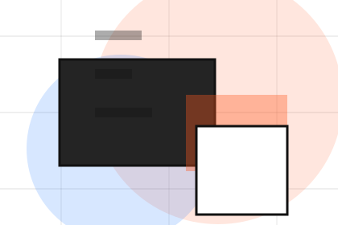
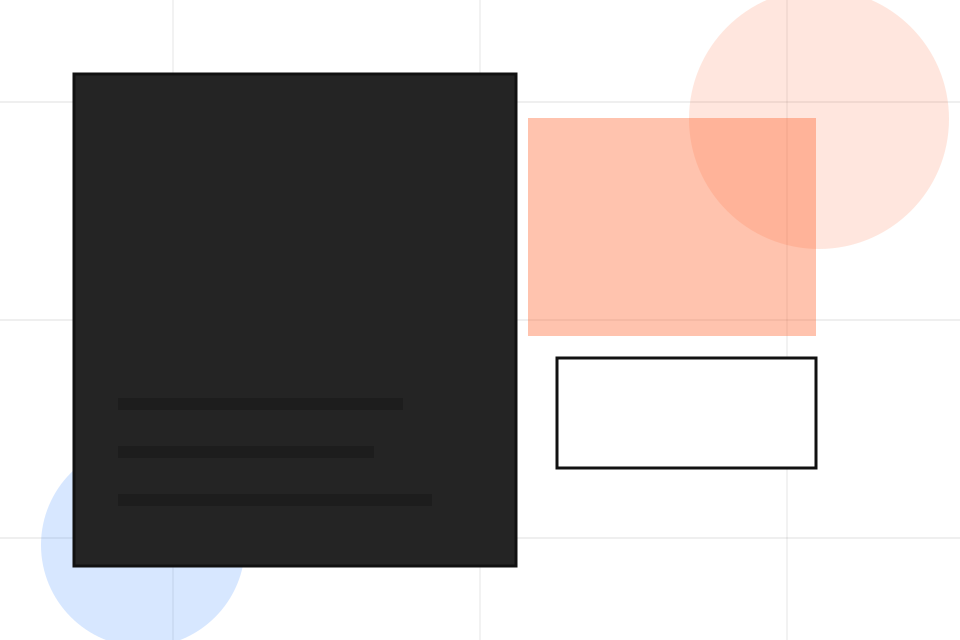
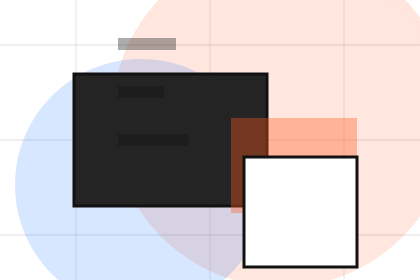
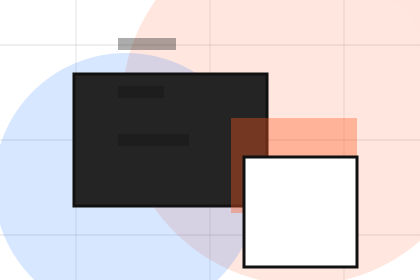
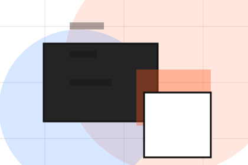
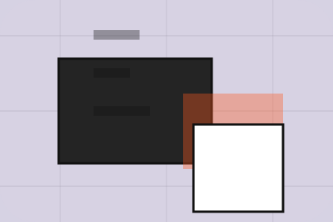

Context
Priorities gives the page a specific angle instead of repeating the navigation label.
Strategy / 01
Strategy opens as a clear consulting decision hub: what Vector offers, who it helps, why it matters, and which route to take first.
The first screen combines positioning, proof, primary action, and fast internal navigation, so people can act immediately or compare the rest of the strategy route with context.
Idea-led editorial hero
Select the closest route and Vector keeps the next step, proof, and follow-up expectation aligned with clarity, leverage and measurable progress.

Strategy / 02
Market adds professional context to the strategy route, using the editorial innovation studio structure to support clarity, leverage and measurable progress before visitors choose a next step.
Vector uses case thinking cards and focused copy to make the decision easier to scan, aligning the section with clarity, leverage and measurable progress rather than filling space.
Explore StrategyMarket gives the page a specific angle instead of repeating the navigation label.
The case thinking cards show what to compare, what to avoid, and what matters most for consulting, strategy & business advisory visitors.
The final cue points to a useful internal route so the section keeps the journey moving.
Strategy / 03
Positioning adds professional context to the strategy route, using the editorial innovation studio structure to support clarity, leverage and measurable progress before visitors choose a next step.
Vector uses case thinking cards and focused copy to make the decision easier to scan, aligning the section with clarity, leverage and measurable progress rather than filling space.
Explore StrategyVector structures positioning around context, judgment, and a clear next route so visitors can compare the block quickly before they send a brief.
Send BriefStrategy / 05
Roadmap explains the operating sequence so visitors can see how the first request becomes a clear recommendation and follow-up.
The steps are written from the visitor side: what they do first, what Vector clarifies, what they receive, and how support continues.
Explore StrategyHow visitors begin this route and what detail is useful at the first step.
What Vector reviews, filters, or explains before recommending the next move.

What the visitor receives afterward, including support, proof, or a handoff to the next page.
Strategy / 06
Execution adds professional context to the strategy route, using the editorial innovation studio structure to support clarity, leverage and measurable progress before visitors choose a next step.
Vector uses case thinking cards and focused copy to make the decision easier to scan, aligning the section with clarity, leverage and measurable progress rather than filling space.
Explore StrategyExecution gives the page a specific angle instead of repeating the navigation label.
The case thinking cards show what to compare, what to avoid, and what matters most for consulting, strategy & business advisory visitors.
The final cue points to a useful internal route so the section keeps the journey moving.
Strategy / 07
Measurement adds professional context to the strategy route, using the editorial innovation studio structure to support clarity, leverage and measurable progress before visitors choose a next step.
Vector uses case thinking cards and focused copy to make the decision easier to scan, aligning the section with clarity, leverage and measurable progress rather than filling space.
Explore StrategyMeasurement gives the page a specific angle instead of repeating the navigation label.
The case thinking cards show what to compare, what to avoid, and what matters most for consulting, strategy & business advisory visitors.
The final cue points to a useful internal route so the section keeps the journey moving.
Strategy / 08
Risks frames the pressure behind the visit, then connects it to a practical path visitors can recognise and act on.
The copy avoids blame and panic. It shows the common friction, the practical consequence, and the calmer route Vector uses to move people forward.
Explore StrategyVector structures risks around pressure, consequence, and a clear next route so visitors can compare the block quickly before they send a brief.
Send BriefStrategy / 09
Alignment adds professional context to the strategy route, using the editorial innovation studio structure to support clarity, leverage and measurable progress before visitors choose a next step.
Vector uses case thinking cards and focused copy to make the decision easier to scan, aligning the section with clarity, leverage and measurable progress rather than filling space.
Explore Strategy

Alignment gives the page a specific angle instead of repeating the navigation label.
Strategy / 10
Vector closes the strategy route with a clear action, a quick reminder of the value, and a low-friction way to send a brief.
Visitors who are ready can use the primary action. Visitors who are still comparing can scan the section links, proof, and support routes before they send a brief.
Send BriefThe final block keeps the choice simple: act now, compare one more proof route, or send enough detail for a focused response.
Send Briefclarity, leverage and measurable progress
A strategy studio site with large editorial type, idea-led modules, mosaic proof, and workshop conversion. Strategy ends with a direct path to send a brief, plus enough context for visitors who still need to compare.

Send BriefInformation is provided for planning and should be reviewed for the final client, location, and operating rules.